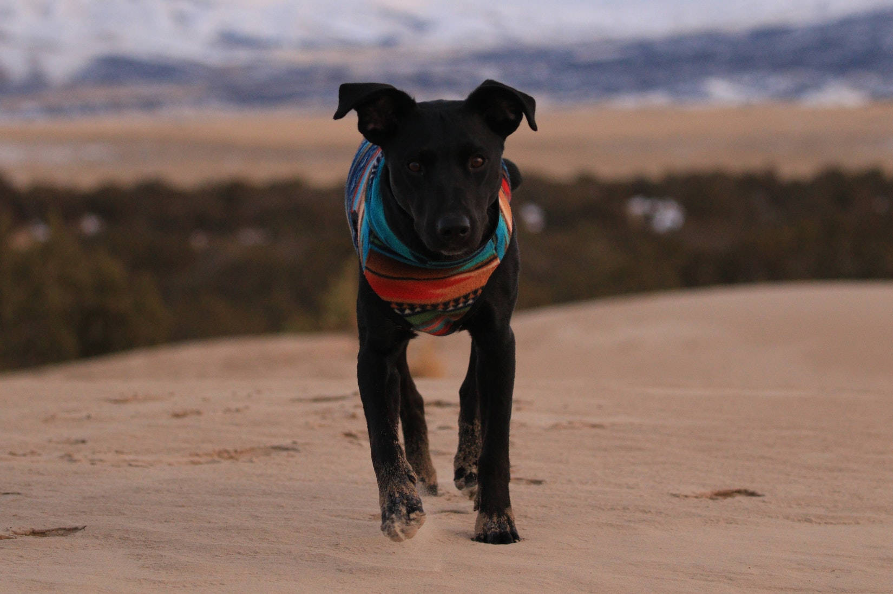
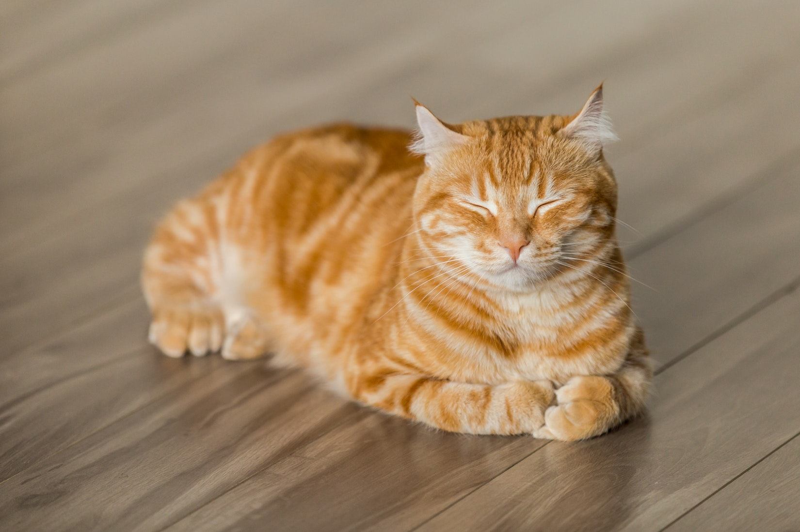
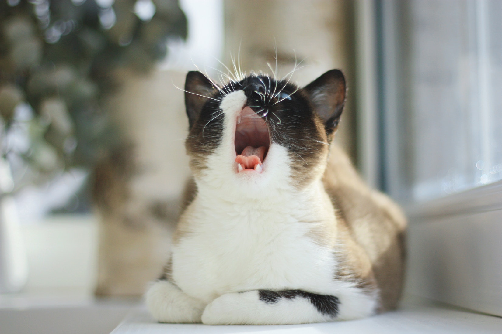

Animals for Adoption
Bob

I’m Bob. I love people; especially ones who give me massages, peanut butter and let me snooze in the sun. I have a favorite spot, right behind my ears, that I like to get rubbed. When that happens, I make a funny sound, because it feels so good! I get along with the dogs and people I have met here, including respectful children of all ages. I would rather not spend my time jogging or wrestling with energetic dogs since I’m a really mellow guy. I need a house full of soft beds, people who like snuggles and yummy treats!
Adopt Me!
Ralph

“Are you looking for a friend? Well so am I! Someone to walk on the beach with? Me too! How about a cuddle on the couch and someone who will listen and not judge you? So am I! We have so much in common I’m sure we could even be BFF! I’m not looking for just anyone. Someone who will appreciate my protective nature (no door bells needed!)! I’m not only a little cutie with my curled tail and big brown eyes, I have substance and intelligence! I have learned the basics like sit, down and would love to continue learning new things.
Adopt Me!
Judy

Judy made her way here on Wings of Rescue. She got out of a crowded Texas shelter and is looking for a home of her own right here in the Pacific Northwest. She's nervous in the shelter environment but is such a sweetheart who enjoys pets and treats. She is flirty and quick to purr and make biscuits when she gets attention. She's currently housed with another cat and seems to be doing well with him. Will you give Judy a chance and the quiet loving home she deserves? Come and meet her at the Sherwood Shelter.
Adopt Me!
Greg

With his adorable bunny-bob of a tail, Greg is a real cutie who enjoys head scratches and full body rubs. He's quite generous with his purrs! A calm kitty, Greg is very affectionate - the shelter staff loves his endearing personality. He can be quite playful, and is especially fond of chasing a crinkle ball. He gets along well with his kitty roommate, too. Please come spend some time with this great little cat today!
Adopt me!
Tony

Yes, Tony is on the shy side, but his curiosity gets the best of him and he'll come out to explore and to be petted. He is so adorable and sweet natured and gets along well with other quiet cats. Why not take this extra cute boy home with you and help him come out of his shell?
Adopt Me!